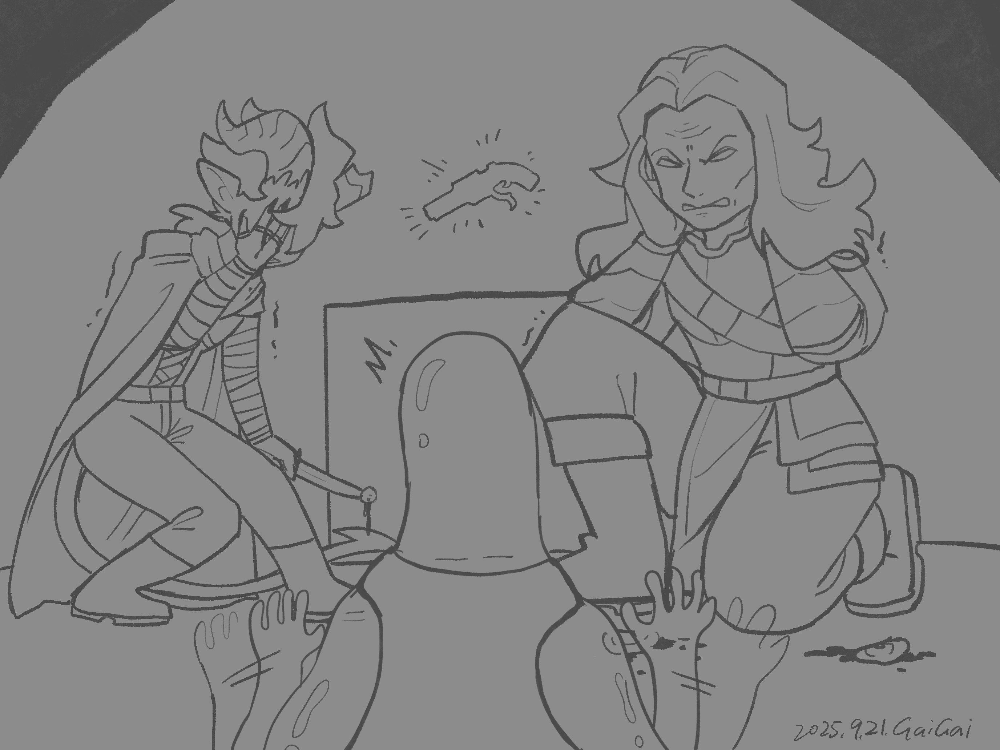

Chapter 3: The Heartless Trial
Seats of the Eclipse


Seats of the Eclipse
15051.10.17
眼看羅特一直醒不來，冒險者們決定先離開靈魂議會，保持體力，以面對明天中午的試煉。
巴斯帶著三人來到他之前居住在不動席的宿舍，四人一同來到一間單人房。在舍監簡單確認羅特的狀況穩定後，依然昏睡的羅特在巴斯的床上躺著。巴斯注意到烏波是月神教的信徒，和他詢問了一些相關的問題，以及和妖精王國有關的事，但他也注意到烏波很多都不清楚，讓巴斯稍微放心。
賽柏祈禱，試圖和奈西斯溝通，來詢問明天試煉的可能內容，卻意外聽見了一個沒聽過的聲音，對著他笑道「你也會參與其中喔！」。
15051.10.18
大家睡飽後醒來了，連羅特也清醒了。
接近中午時間，大家抵達了靈魂議會。從不動席的門走入，冒險者們看見了高塔的正中間有個流體狀的高聳柱體。烏波感到好奇，把手伸進去，發現這個流體有一股將他往上抬昇的感覺。他決定整個人埋進去，流體穩穩地將他向上送。其他冒險者雖然覺得有點古怪，但還是跟著上去了。
流體將冒險者們送到了一個昏暗的空間，偌大的平台，周圍是如競技場的觀眾席，但空無一人。平台上，有一小群人，以及站在遠處的幾個議會成員。
正午時分，衰竭席粗重的喘息聲傳到每個人的耳中。除了烏波外，另外一名挑戰者也來到了舞台中央，那是一名全身潔白的衛兵機器人，而他身邊還跟著兩名夥伴，對他投以充滿崇拜的眼神。衰竭席宣告三名挑戰者只有兩席來到，準備宣布試煉開始。這時，一個熟悉的身影從輸送的流體快速跳出，氣喘吁吁地表明自己遲到了。是譚。
冒險者們對於譚的現身有些驚訝，但這終歸是一場試煉，譚也說過誰都有資格參與，也就不奇怪了。
衰竭席請挑戰者們依序選擇兩名夥伴作為他們試煉時的支援者，也發現現場除了挑戰者外，只有冒險者三名與機器人的兩名夥伴，因此他叫喚了一名議會指派的人員，男性貓人賈里克，作為可以選擇的支援者。
烏波先選擇了賽柏，譚選擇了官方指派的賈里克，機器人魯米歐則選擇了他的夥伴之一的女性蛇人札爾。第二輪，魯米歐選了另一名夥伴，男性獸人喬瓦，譚選了巴斯，而最後烏波則選了羅特。
衰竭席將一顆魔法球抬到舞台中間，請大家觸碰這顆球，來將自己投射到試煉的空間。瞬間，冒險者們看見一片青翠的草地，四周有六個建築物，分別是屬於六個席次代表的眼、耳、鼻、舌、四肢，與心。
挑戰者們頭上各自浮現了10個標示，依照衰竭席的說明，這是他們的心臟移除進度。唯有將標示全數移除，才能進入最終的場地「心之席」。而心之席只能容納兩名挑戰者，因此勢必會有一名挑戰者無法晉級。支援者們各自得到了一個屬於自己的特殊能力，可以操弄自己的挑戰者或其他挑戰者的心臟指示物。衰竭席繼續說明，每一輪，挑戰者可以選擇挑戰一個不同的席次，但不能挑戰已經挑戰過的，也不能挑戰同時有人在裡面的席次。每挑戰成功一個席次，即可移除一個指示物。
試煉開始，烏波方選擇先進入幻音席。支援者被指示，要各聽兩段月神的神諭，判斷哪一句為真，哪一句為否。「議會所言，皆為聖旨」、「月神慈悲，大地光輝」，羅特成功判斷後者為真；「日與月，一體，兩面」、「芬尼爾奪走的，必將償還」，賽柏成功判斷前者為真。大門打開，烏波頭上的指示物少了一個。
冒險者們看見三名挑戰者都成功拔掉了一個指示物。第二個試煉，烏波選擇曲影席。兩名支援者各自被分配到了一個迷宮，以虛像顯現在他們的眼前。曲影席告知他們，挑戰者被分配到的地圖會和其中一名支援者的相同，但挑戰者看不見這個地圖。支援者們必須分別給挑戰者一個方向（上、下、左或右），指引挑戰者正確走出迷宮。透過傳訊術，羅特和賽柏確認了戰術，也在過程中確定了烏波走的是羅特的地圖。在羅特和賽柏的合作下，烏波成功走出地圖，又拔掉了一個指示物。
冒險者們發現三名挑戰者頭上的指示物數量不一樣了。肯定是有人動了手腳。這時，傳來了衰竭席的聲音。他表示新增一條規則：支援者可以選擇自己身體未受傷的眼、耳、鼻、舌、四肢其中一個（雙眼各算一個，以此類推）主動犧牲，拔除其挑戰者的兩個指示物。
烏波決定了進入死寂席。長桌上有10個杯子，杯子內都是透明如水的液體。死寂席的聲音傳出，10個杯子中，只有一個杯子內的液體沒有毒。支援者可以每個杯子嘗試一次，感受是否有毒。最終，他們必須給予挑戰者一個結論，讓挑戰者正確喝下沒有毒的液體。羅特與賽柏個別嘗試，判斷了有六個杯子內的液體他們的都認為是沒有毒的。他們嘗試用其他方法，如視覺、直覺等，最終找出了兩個杯子最有可能是沒有毒的。烏波從兩個杯子以直覺挑了一杯喝下。門打開，烏波頭上的指示物少了一個。
三名挑戰者的指示物數量差距越來越大，魯米歐越來越接近勝利，譚的指示物數量則遲遲不下降。
烏波踏入了第四個區域，衰竭席。烏波聞到了一股噁心的臭味，遲遲不散去。衰竭席告知他，兩名支援者各會聞到兩種不同的味道，他在一段時間後會聞到其中一種味道，需要正確猜出是哪一種味道，猜錯的話，被猜到的支援者鼻子會被砸爛。羅特聞到了花香，賽柏則聞到了海水的味道。羅特透過傳訊術，告知烏波他聞到的味道。烏波也成功判斷自己聞到的味道是花香，與羅特的一致。大門再度打開，烏波頭上的指示物又少了一個。
走出衰竭席，賽柏嘗試用他的特殊能力，增加另外兩名挑戰者的心臟指示物。但他發現只有譚頭上的指示物被增加，魯米歐則沒有。冒險者們看見魯米歐的兩名支援者互相擁抱，並將對方的耳朵割下，瞬間，魯米歐頭上的指示物清空。只剩下譚和烏波爭取最後一席了。
烏波帶著支援者們走入不動席。桌子上有一把魔法槍。不動席告訴他們，這把魔法槍裡面有十發子彈，其中只有一發是啞彈。前八發，要挑戰者分別打在支援者的四肢，第九發打在挑戰者的心臟，最後一發則可以不用擊出。羅特和賽柏討論，挑戰成功的機率極低，就算挑戰成功，也只能移除一個指示物，還會剩下五個指示物，這樣還需要透過特殊能力和犧牲幾個身體部位，才能移除足夠多的指示物。同時，挑戰者們的四肢也會被打傷，這樣倒不如先犧牲自己的身體部位，讓烏波晉級。
羅特主動提議自己願意犧牲一顆眼睛，詢問賽柏的意見。賽柏也決定犧牲自己的兩個耳朵，來幫助烏波。羅特透過法術，將賽柏的雙耳凍住，讓烏波拿匕首將賽柏的雙耳割下。羅特則自己拿出匕首，大力刺向左眼。
不動席的建築崩塌，烏波頭上的指示物歸零。
烏波與魯米歐，心空席的最終試煉，即將登場。
15051.10.17
Seeing that Lott still couldn't wake up, the adventurers decided to leave the Soul Council first to maintain their strength to face the trial at noon tomorrow.
Buzz took three people to the dormitory where he lived before, and the four of them came to a single room together. After the warden briefly confirmed that Lott's condition was stable, Lott, who was still sleeping, lay down on Buzz's bed. Buzz noticed that Ubbo was a believer in the Moon God Religion and asked him some related questions and things related to the Fairy Kingdom. However, he also noticed that Ubbo was unclear about many things, which made Buzz a little relieved.
Psyber prayed and tried to communicate with Nessis to inquire about the possible content of tomorrow's trial, but unexpectedly heard an unknown voice, smiling at him and saying "You will also participate in it!".
15051.10.18
Everyone woke up after a full sleep, even Lott woke up.
Near noon, everyone arrived at the Soul Parliament. Entering through the fudo seat door, the adventurers saw a fluid-like towering column in the middle of the tower. Ubbo was curious, put his hand in, and found that the fluid had a feeling of lifting him upwards. He decided to bury his whole body in it, and the fluid steadily sent him upward. Although the other adventurers found it a bit strange, they still followed up.
The fluid sent the adventurers to a dark space, a huge platform, surrounded by auditoriums like an arena, but empty. On the platform, there was a small group of people, as well as a few council members standing in the distance.
At noon, the heavy breathing sound of the exhausted mat reached everyone's ears. In addition to Ubbo, another challenger also came to the center of the stage. It was a guard robot with a pure white body. He was accompanied by two partners, who looked at him with admiration. The Exhausted Seat announced that only two of the three challengers had arrived, ready to announce the start of the trial. At this time, a familiar figure quickly jumped out of the conveyed fluid, panting to indicate that he was late. It's Tam.
The adventurers were a little surprised by Tam's appearance, but this was a trial after all, and Tam said that everyone was eligible to participate, so it was not surprising.
The Exhaustion Table asked the challengers to choose two partners in order to be their supporters in the trial. He also found that besides the challengers, there were only three adventurers and two robot partners, so he called a person appointed by the council, the male catman Ja’Riq, as a supporter to choose from.
Ubbo chose Psyber first, Tam chose the officially assigned Ja’Riq, and robot Lumio chose one of his companions, the female snake-man Tzar. In the second round, Lumio chose another partner, the male orc Jova, Tam chose Buzz, and finally Ubbo chose Lott.
The Exhaustion Seat lifted a magic ball to the middle of the stage and asked everyone to touch the ball to project themselves into the trial space. In an instant, the adventurers saw a green grassland surrounded by six buildings, representing the eyes, ears, nose, tongue, limbs, and heart, respectively, representing the six seats.
Ten signs appeared above each of the challengers. According to the Exhaustion Seat's instructions, this was their heart removal progress. Only by removing all the signs can you enter the final venue, "The Seat of the Heart." The Heart Seat can only accommodate two challengers, so one challenger will inevitably fail to advance. Supporters each get a special ability of their own, which allows them to manipulate the heart counters of their own challenger or other challengers. The Exhausted Seat continues to explain that in each round, the challenger can choose to challenge a different seat, but he cannot challenge the seat that has already been challenged, nor can he challenge the seat where someone is in it at the same time. For each successful challenge, one token will be removed.
The trial began, and Ubbo chose to enter the Phantom Seat first. The supporters were instructed to listen to two passages from the Moon God's oracle and judge which one was true and which one was false. "Everything spoken by the council is an imperial edict", "The Moon God is merciful and the earth is radiant", Lott successfully judged the latter to be true; "The sun and the moon, one body, two sides", "Phynoir What was taken away will be repaid", Psyber successfully judged the former to be true. The door opens, and there is one less token on Ubbo's head.
The adventurers saw that all three challengers successfully pulled out a token. In the second trial, Ubbo chooses the Shadow Seat. The two supporters were each assigned to a maze, and a virtual image appeared in front of them. Qu Yingxi informed them that the map assigned to the challenger would be the same as that of one of the supporters, but the challenger could not see the map. The supporters must give the challenger a direction (up, down, left or right) to guide the challenger out of the maze correctly. Through the communication technique, Lott and Psyber confirmed the tactics, and in the process also determined that Ubbo was taking the map of Lott. With the cooperation of Lott and Psyber, Ubbo successfully walked out of the map and pulled out another token.
The adventurers discovered that the number of tokens on the heads of the three challengers was different. Someone must have tampered with it. At this time, the sound of exhaustion was heard. He said that a new rule was added: the supporter can choose one of his uninjured eyes, ears, nose, tongue, and limbs (eyes each count as one, and so on) to actively sacrifice and remove the two tokens of his challenger.
Ubbo decided to enter the Death Seat. There are 10 cups on the long table, and the cups are filled with clear water-like liquid. The sound of the death mat came out, and among the 10 cups, the liquid in only one cup was not poisonous. Supporters can try each cup once to feel if it is poisonous. In the end, they must give the challenger a conclusion and let the challenger drink the non-poisonous liquid correctly. Lott and Psyber tried individually and judged that the liquid in six cups was not poisonous. They tried other methods, such as vision, intuition, etc., and finally found out that the two cups were most likely to be non-poisonous. Ubbo intuitively selected one of the two glasses and drank it. The door opens, and Ubbo has one less indicator on his head.
The difference in the number of tokens between the three challengers is getting bigger and bigger. Lumio is getting closer and closer to victory, while Tam's number of tokens has not been declining.
Ubbo has entered the fourth area, the seat of failure. Ubbo smelled a disgusting odor that didn't go away. The failure seat told him that each of the two supporters will smell two different smells. He will smell one of the smells after a period of time, and he needs to correctly guess which smell it is. If he guesses wrong, the nose of the guessed supporter will be smashed. Lott smelled of flowers, and Psyber smelled of sea water. Lott uses communication technology to tell Ubbo what he smells. Ubbo also successfully judged that the smell he smelled was floral, which was consistent with Lott. The door opened again, and there was one less indicator on Ubbo's head.
Exiting the exhaustion table, Psyber attempts to use his special ability to increase the heart counters of the other two challengers. But he found that only the counter on Tam's head was increased, not Lumio. The adventurers saw Lumio's two supporters hugging each other and cutting off each other's ears. In an instant, the tokens on Lumio's head were cleared. Only Tam and Ubbo are left fighting for the final spot.
Ubbo led the supporters into the immovable seat. There is a magic gun on the table. Fudo Xi told them that there were ten bullets in this magic gun, and only one of them was a dud. The challenger is required to hit the supporter's limbs with the first eight shots, the ninth shot at the challenger's heart, and the last shot does not need to be shot. Lott and Psyber discussed that the probability of a successful challenge is extremely low. Even if the challenge is successful, only one counter can be removed, leaving five counters. This requires special abilities and the sacrifice of several body parts to remove enough counters. At the same time, the limbs of the challengers will also be injured, so it is better to sacrifice their own body parts first and let Ubbo advance.
Lott offered to sacrifice an eye to ask Psyber's opinion. Psyber also decided to sacrifice his two ears to help Ubbo. Lott used magic to freeze Psyber's ears, and asked Ubbo to use a dagger to cut off Psyber's ears. Lott took out his dagger and stabbed his left eye vigorously.
Fudosita's building collapsed, and the counter on Ubbo's head returned to zero.
Ubbo and Lumio, the final trial of the empty seat, are about to appear.